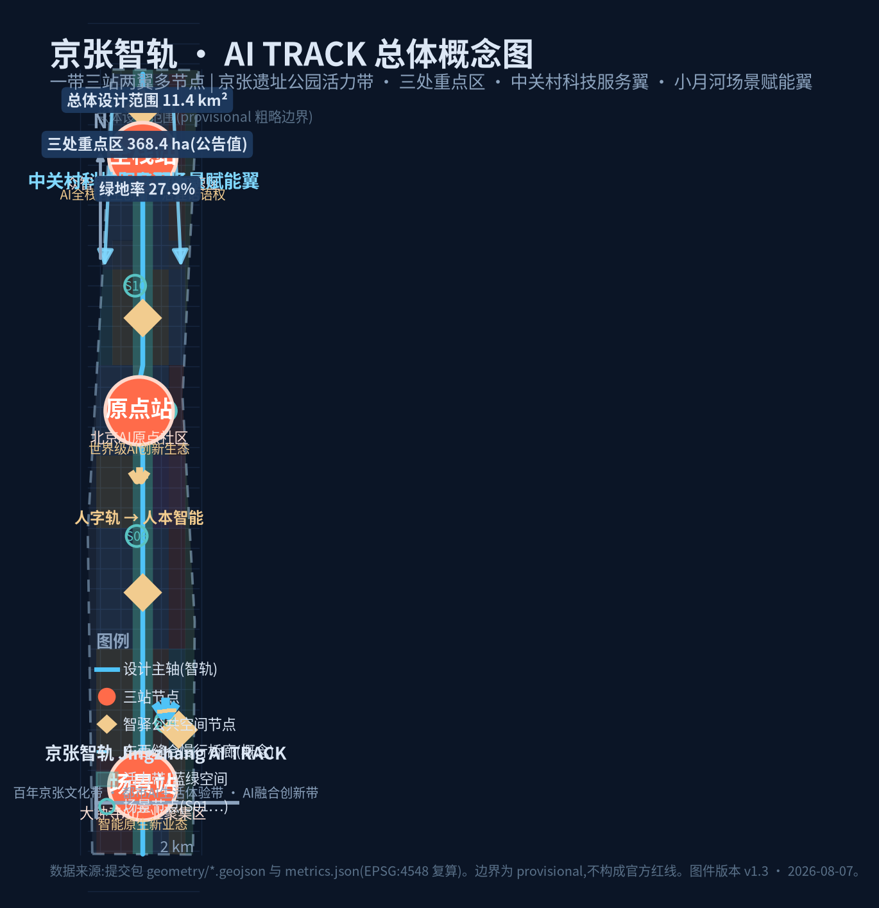
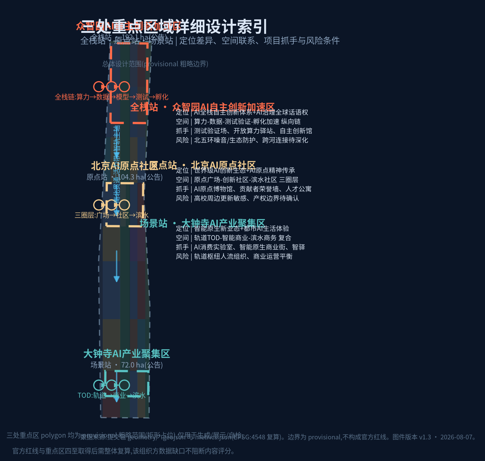
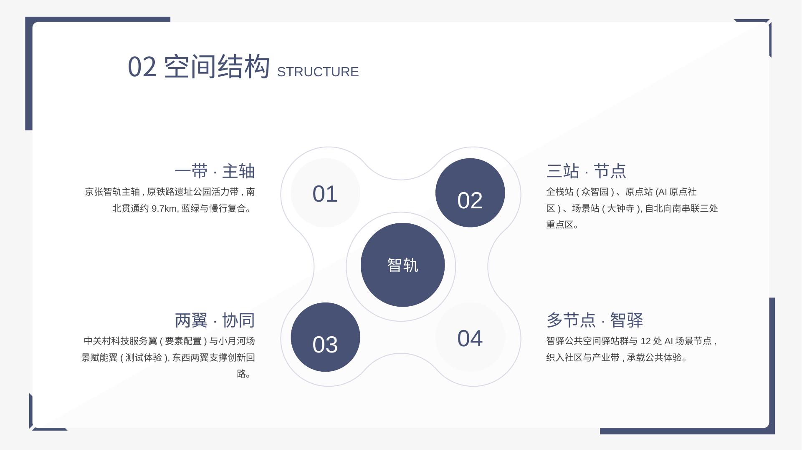

京张智轨 · AI TRACK —— 从人字轨到人本智能:百年京张AI创新带城市设计
以1909年京张铁路“人字形展线”的自主创新精神为文化母题,提出“京张智轨·AI TRACK”总体概念:一带三站两翼多节点的空间结构、三大定位与五大功能、三区两翼协同回路,配套12张AI场景卡、7类用户画像、3处AI朝圣地标、18项更新项目与三期实施计划;全部空间数据由 provisional 粗略边界生成并明确标注精度限制。
京张智轨 · AI TRACK —— 从人字轨到人本智能
设计依据与资料清单
本方案依据以下资料编制,全部为公开、已清权或本仓库提供的可用资料,未使用任何未授权或非公开的图件、地图与版权素材([source:OFFICIAL-ANNOUNCEMENT]、[source:AGENT-TASKBOOK]、[source:SITE-PACKAGE]、[source:SOURCE-REGISTRY]、[source:PROCESSED-FACT-PACK]):
- **官方公告与任务依据**:北京市规划和自然资源委员会海淀分局《百年京张AI创新带城市设计国际方案征集资格预审公告》(2026-05-09),确定三层范围、三处重点区域、公告面积、设计任务与成果语境([standard:PROJECT-OFFICIAL-ANNOUNCEMENT])。
- **面向智能体开源征集任务书摘录**(2026-05-18,用户提供清权摘录):补充三大定位、五大功能、三区两翼、六项智能体任务、十条共创原则与统一边界条款([standard:PROJECT-AGENT-OPEN-CALL-TASKBOOK])。
- **专业标准本地快照**:《城市设计管理办法》(住建部 2017)([source:MOHURD-URBAN-DESIGN-MEASURES],[standard:MOHURD-URBAN-DESIGN-MEASURES])、《城市、镇控制性详细规划编制审批办法》([source:MOHURD-CONTROL-DETAILED-PLANNING],[standard:MOHURD-CONTROL-DETAILED-PLANNING])、《国土空间调查、规划、用途管制用地用海分类指南》(自然资源部 2023)([source:MNR-LAND-USE-CLASSIFICATION],[standard:MNR-LAND-USE-CLASSIFICATION-GUIDE]),均以仓库本地参考快照为准。
- **边界与几何**:官方精确红线尚未取得,使用
brief/site-package/geometry/provisional_boundaries.geojson中明确标注的provisional_constraint粗略边界作为生成、展示与自检依据([source:PROVISIONAL-BOUNDARY]、[source:PROVISIONAL-BOUNDARY-BASIS]);其推定规则、适用边界与替换条件见provisional_boundaries_basis.md。该组织方数据缺口不阻断内容评分,但所有精度敏感图层与指标在官方 polygon 到位后必须复算。 - **背景资料**:北京市科委、中关村管委会“三区两翼”打造世界级AI集聚地报道([source:BEIJING-KW-THREE-AREAS-WINGS])、海淀区“1+X+1”现代化产业体系建设布局([source:HAIDIAN-1X1]),仅作产业与政策背景,不支撑空间控制结论。
**资料与成果对应关系**:本方案的设计判断均可在 geometry/*.geojson、metrics.json、compliance_matrix.json、standard_matrix.json、design_depth_matrix.json、assumptions.json 中复核;正文以 [source:...]、[standard:...]、[depth:...]、[data:...]、[metric:...] 标签给出证据链。**当前主要数据缺口**:官方红线、三处重点区四至、控规指标(容积率/建筑高度/建筑密度/绿地率控制值/退线)、道路红线、现状建筑与权属底数、市政管线与工程条件——均列为待确认项,不虚构数值([depth:risk_missing_data])。

三层范围工作框架
本项目为三层递进工作框架([depth:three_level_scope_framework]),各层目标、边界、深度与成果如下:
**统筹研究范围(约43.6 km²)**:北至北五环路、东至京藏高速、南至西直门外大街、西至万泉河路(公告文字四至)。承担产业战略、区域协同与未来城市形态研究,产出三大定位、五大功能、三区两翼协同回路、全球创新生态案例与AI创新生态图谱,不直接落用地([source:PROVISIONAL-BOUNDARY] 中 PROV-RESEARCH-001 为粗略参考要素)。统筹范围内现状底数为公开背景资料,未作为规划控制依据。
**总体设计范围(约11.4 km²)**:京张遗址公园周边1—2公里城市与产业区,以提交的 SITE-001 粗略替代边界表示(面积 11,412,825 m²,[data:geometry/site_boundary.geojson#SITE-001],[metric:site_area_sqm])。承担控制性详细规划深度的城市设计:空间结构、用地布局、更新框架、交通轨道市政、蓝绿公共空间、风貌控制、指标复算([depth:overall_spatial_structure]、[depth:land_use_layout])。该边界为 provisional_constraint、official_boundary=false、boundary_precision=provisional_rough,仅用于方案生成、展示与自检,不得作为官方红线、审批依据或精确面积复算依据;官方 polygon 到位后,land_use、buildings、roads、green_space、public_space、phasing 与全部面积指标需整体重算([source:PROVISIONAL-BOUNDARY-BASIS])。
**重点区域范围(合计约368.4 ha)**:自北向南为众智园AI自主创新加速区(约192.1 ha)、北京AI原点社区(约104.3 ha)、大钟寺AI产业聚集区(约72.0 ha)(公告面积)。承担规划综合实施方案深度详细设计,对应 geometry/key_areas.geojson 三个 provisional_constraint 要素([data:geometry/key_areas.geojson#PROV-KEY-001]、[data:geometry/key_areas.geojson#PROV-KEY-002]、[data:geometry/key_areas.geojson#PROV-KEY-003]),其三处粗略 polygon 合计面积 3,692,893 m²([metric:key_detailed_design_area_sqm]),与公告值偏差约+0.24%,仅供生成与展示,不表达地块边界或权属。
三层范围的传导逻辑:产业战略与区域协同(统筹层)→ 空间结构与更新框架(总体层)→ 片区详细设计与实施项目(重点层),每个重点区的定位均回接五大功能分工([depth:three_key_area_detailed_design])。

统筹研究范围产业与未来城市研究
总体概念:京张智轨 · AI TRACK
本方案提出总体概念名称为**“京张智轨(带)”,英文名 The Jingzhang AI TRACK(Centennial Innovation Belt)**([depth:overall_spatial_structure])。命名逻辑:1909年京张铁路是中国人自主修建的第一条干线铁路,詹天佑在青龙桥设计的“人字形展线”以最小工程代价翻越八达岭,是“自主创新、因地制宜、以少胜多”的精神图腾;今日“一带”以原京张铁路走廊为骨架建设世界级AI创新集聚地,恰似把百年铁轨升级为承载算力、数据、人才与场景的“智能轨道”——**从“人字轨”到“人本智能”**。命名体系:一带(京张智轨主轴)→ 三站(全栈站/原点站/场景站,对应三处重点区)→ 两翼(中关村科技服务翼/小月河场景赋能翼)→ 多节点(智驿AI公共空间驿站群),站名与翼名共同构成可延展的指路系统。
**Logo与视觉识别方向**:以“人字形展线”为母题,两段折线交汇形成字母“A”的顶点,即“人字轨≡AI”同构图形;辅助元素为枕木点阵(隐喻数据流)与轨道线(隐喻链接)。双主色:京张铁路锈红(传承文化)+ 数字青蓝(面向未来),辅以轨道灰与数据金。该图形可延展为导视系统、站名牌、公共空间铺装、活动主视觉与数字界面,不直接复制任何既有机构标识([source:AGENT-TASKBOOK] 要求命名体系、Logo方向与禁止越界条款,本部分均为概念建议,供专业团队深化)。
三大定位、五大功能与三区两翼协同回路
三大定位:**百年京张文化带、都市AI生活体验带、AI融合创新带**;五大功能:**AI全栈自主创新体系、世界级AI创新生态、AI+场景赋能新范式、智能化AI活力城市、AI治理全球话语权**([standard:PROJECT-AGENT-OPEN-CALL-TASKBOOK])。空间上形成协同回路:众智园(全栈站)输出自主技术底座→ AI原点社区(原点站)集聚创新生态与人才→ 大钟寺(场景站)承接场景落地与智能原生业态→ 小月河场景赋能翼提供测试验证与城市级体验→ 中关村科技服务翼提供资本、IP与要素配置→ 反馈回众智园形成“技术-生态-场景-服务”闭环。该回路以概念方式表述,不构成已确定的政府分工安排。
全球AI创新生态案例(5-8个)与可转化机制
1. **伦敦国王十字(King's Cross)**:铁路遗产区更新为科创与文化目的地——站场保留、产业导入、公共空间先行的组合拳,与京张遗址公园带更新模式高度对标。可转化:以铁路遗产为公共锚点、先公共空间后产业楼宇的时序。 2. **硅谷—帕洛阿尔托**:大学-企业-资本的正反馈飞轮。可转化:以高校(学院路沿线)为人才源头,建设“教授-学生-基金”短链路孵化器。 3. **英国剑桥科技园**:大学周边低密度科研园与城市功能融合。可转化:原点社区“科研+社区+滨水”三圈层。 4. **新加坡纬壹科技城(one-north)**:政府统筹、园区-场景-社区一体。可转化:全栈站“测试验证-孵化加速-算力驿站”纵向链。 5. **深圳南山/后海**:产业集聚与城市更新联动、场景开放倒逼技术迭代。可转化:场景站“智能商业+消费实验室”新业态。 6. **杭州未来科技城**:平台经济与特色小镇模式。可转化:小月河翼“AI场景街区”式主题空间。 7. **特拉维夫**:创业文化与24小时活力街区。可转化:智驿24小时开放空间与开发者社区。 8. **首尔板桥/东京丸之内**:轨道枢纽TOD与总部商务协同。可转化:大钟寺轨道枢纽TOD复合开发。
每个案例的转化机制均对应空间落点(用地、节点、公共空间、场景卡),见 compliance_matrix.json 的 agent.2 条目;不编造任何企业投资额、产值或财政承诺([source:BEIJING-KW-THREE-AREAS-WINGS] 仅为产业背景)。
发展理念:海淀"开放创新带"模式
综合国内外科学城、科技园区与创新街区经验,本方案提炼成功要素为**“人才密度 × 公共空间 × 场景开放 × 治理信任”四因子**:人才密度依赖高校院所与职住平衡,公共空间承载非正式交往,场景开放提供真实需求牵引,治理信任保障数据与伦理底线。据此提出适合海淀的**“开放创新带”发展理念**:不复制园区化封闭模式,而是以京张铁路遗产带为公共锚点,采用**“遗产带活化 + 创新社区聚落 + 场景开放街区”**三位一体的开放创新带模式——遗产带提供文化识别度,创新社区聚落提供人才密度,场景开放街区提供迭代速度,并以"可测试、可迭代、可治理"为城市形态准则([source:AGENT-TASKBOOK] 三大定位与五大功能语境)。该理念为概念性研究结论,供专业团队深化。
产业重点与创新网络组织
**产业重点(方向性,供深化)**:①算力与数据基础设施;②大模型与AI软件;③具身智能与机器人;④智能网联汽车与自动驾驶;⑤AI+行业应用(医疗、教育、法律、文旅、生活服务);⑥AI治理、评测与数据服务——前四项为“AI全栈自主创新体系”主线,后两项为“AI+场景赋能”与“AI治理话语权”支撑,与三区两翼分工对应。
**创新网络**:以三区两翼协同回路为核心环,叠加**节点网络**(开放算力驿站、大模型公共评测实验室、数据沙箱、孵化加速器、智驿驿站、双碳驿站)与**外部协同**方向(北纬社区、未来科学城、怀柔科学城、经开区及京津冀创新走廊,作为区域协同语境,不构成具体空间安排)。
**产业空间组织方式**:全栈站按“算力-数据-模型-测试-孵化”纵向链组织;原点站按“广场-创新社区-滨水社区”圈层组织;场景站按“轨道TOD-智能商业-滨水商务”复合组织;两翼分别承担要素配置与场景赋能;留白用地作为产业迭代的战略弹性([source:BEIJING-KW-THREE-AREAS-WINGS] 三区两翼背景,[depth:overall_spatial_structure])。
未来AI城市形态研究
统筹层研究结论:面向AI新质生产力的城市形态应具备**“可测试、可迭代、可治理”**三性——城市即实验室(测试验证场景)、城市即界面(公共空间承载人机交互)、城市即底座(算力/数据/能源市政化)。据此提出:(1)端侧算力与分布式能源作为新型市政要素;(2)数字孪生城市运营平台作为公共基础设施;(3)AI治理公共实验区(伦理审查、数据沙箱、人工复核)作为差异化功能,呼应“AI治理全球话语权”定位。上述均为概念性研究结论([depth:existing_conditions_diagnosis] 明确现状底数为公开背景资料)。
按任务要求将新型城市形态展开为三个可落层面:
- **AI文化**:以“人字轨→人本智能”为总叙事,构建AI艺术共创空间(S12)、文化遗产数字孪生导览(S01)、开源贡献者荣誉体系;AI文化不是装饰,而是与铁路遗产、中关村创新文化并列的第三种城市文化层。
- **AI社会**:面向全龄友好,开展AI素养教育与青少年科普(S12扩展)、适老化与无障碍服务(S04)、公共安全人工复核机制(S06)、AI伦理与治理公共实验区;社会规则先于技术铺开,人工兜底为原则。
- **AI城市**:数字孪生城市运营(S11)、自动驾驶接驳测试环(S08)、机器人配送(S03)、双碳与能源AI驿站(S10)构成“可运行的城市操作系统”,并通过分期开放逐步落地。
三个层面共同回答“适配人工智能的城市形态”问题,并全部映射到第6章的12张场景卡与 geometry/public_space.geojson、geometry/roads.geojson 等空间图层([data:geometry/public_space.geojson#PUB-SPINE] 为公共体验载体)。
总体设计范围城市更新与控规深度城市设计
空间结构
总体设计范围形成**“一带三站两翼多节点”**结构([depth:overall_spatial_structure]):一带即**京张智轨主轴**(原京张铁路遗址公园活力带,贯穿南北约9.7 km);三站即全栈站(众智园)、原点站(AI原点社区)、场景站(大钟寺);两翼即西侧中关村科技服务翼、东侧小月河场景赋能翼;多节点即智驿公共空间驿站群与12处AI场景节点([metric:ai_scenario_node_count])。门户为北五环北门户与西直门外大街南门户,东西向以三条概念性缝合桥廊跨越主轴(见第8章)。
用地布局与产业功能
用地分区基于提交边界生成 geometry/land_use.geojson(33个要素,完整覆盖、无缝隙、无重叠,[data:geometry/land_use.geojson#LU-001]),构成如下(均按EPSG:4548复算,[depth:land_use_layout]):
- 科研用地(0802)约311.0万m²,占27.3%([metric:land_use_0802_sqm])——主轴两侧产业带主体,承担AI研发、孵化加速、测试验证;
- 公园绿地(1401)约251.9万m²,占22.1%([metric:land_use_1401_sqm])——京张遗址公园活力带与小月河滨水绿带;
- 居住用地(0701)约177.9万m²,占15.6%([metric:land_use_0701_sqm])——人才居住与存量宜居提升;
- 商业服务业(05)约127.2万m²,占11.1%([metric:land_use_05_sqm])——三站TOD商业与创新商业;
- 防护绿地(1402)约50.1万m²([metric:land_use_1402_sqm])、道路用地(1207)约41.3万m²([metric:land_use_1207_sqm])、社区服务(0702)约45.4万m²([metric:land_use_0702_sqm])、教育(0804)约45.1万m²([metric:land_use_0804_sqm])、文化(0803)约17.9万m²([metric:land_use_0803_sqm])、医疗(0806)约17.9万m²([metric:land_use_0806_sqm])、广场(1403)约16.8万m²([metric:land_use_1403_sqm])、留白(16)约38.7万m²([metric:land_use_16_sqm])——留白用地作为AI产业弹性空间与远期战略储备。
用地布局逻辑:科研与绿地双核驱动——主轴绿带提供公共交往与人才磁力,两侧产业带提供空间供给;留白用地保障“技术迭代-空间重配”的弹性;居住、教育、医疗、社区服务按“15分钟创新社区”就近配置([standard:MOHURD-URBAN-DESIGN-MEASURES] 公共空间与配套要求)。
城市更新总体框架
总体框架为**“保留为主、改造提质、局部新建、审慎留白”**([depth:retain_renovate_demolish]):(1)保留:京张铁路遗址、沿线历史站房与记忆场所、质量良好的现状居住与高校建筑;(2)改造:老旧产业楼宇功能置换为AI研发/孵化,存量商业场景化更新;(3)新建:三站核心节点与两翼门户的增量空间,集中布局于已明确的城市更新与产业导入区;(4)留白:16类留白用地暂不安排建设,作为远期AI产业与重大设施预留。所有拆改留判断均为**概念建议**,具体地块结论需专业团队结合权属、现状与官方附件深化,本方案不给地块级拆改留结论([standard:MOHURD-CONTROL-DETAILED-PLANNING] 控制性详细规划深度与实施边界)。建筑基底约118.7万m²,占10.4%([metric:building_footprint_area_sqm]、[metric:building_footprint_ratio]),为组团化概念体块,非现状实测或审批规模。
创新指标体系(总体层)
总体层建立5类创新指标:(1)空间供给类(科研用地占比、产业空间、留白弹性);(2)活力类(公共空间占比、慢行连通、绿地率);(3)人才类(人才公寓与社区服务配比,方向性指标,数值待官方底数);(4)生态类(测试验证场景数、场景节点数);(5)治理类(人工复核节点覆盖率,方向性)。控规层面的容积率、建筑高度、建筑密度等指标**缺失,列为待确认控规条件**,不虚构([depth:development_intensity_controls]、[depth:height_massing_character]);方案以“低中高梯度、主轴两侧向绿带跌落”的风貌控制原则表达高度意向,不给出具体限高结论。
面向任务书“指标体系”要求的**方向性AI创新生态指标**(均列为方向性参考,数值待官方底数与运营数据,不编造):①空间供给——科研用地占比27.3%(已复算,[metric:land_use_0802_sqm])、产业楼宇模块化率(待);②生态活力——开放场景数12个([metric:ai_scenario_node_count])、测试验证场景4个、开发者社区规模(待运营数据);③创新产出——每万人发明专利、研发投入强度(待官方统计);④人才——人才公寓占比、轨道通勤占比(待底数);⑤治理——数据沙箱运行数、人工复核覆盖率(方向性)。上述指标在官方附件与运营数据到位前不作为绩效承诺。
重点区域详细设计
三个重点区 polygon 均为 provisional 粗略范围,以下详细设计为方向性方案,供专业团队在官方四至内深化([depth:three_key_area_detailed_design])。
全栈站 · 众智园AI自主创新加速区(约192.1 ha,公告值)
- **定位**:AI全栈自主创新体系 + AI治理全球话语权([source:AGENT-TASKBOOK] 三区两翼分工)。
- **空间结构**:“算力-数据-模型-测试-孵化”纵向链([data:geometry/key_areas.geojson#PROV-KEY-001]):北段布局算力与测试验证(含留白测试场),南段布局孵化加速与开放创新平台,主轴绿带穿越其中形成“全栈站前公园”。
- **建筑更新**:存量楼宇功能置换为AI研发与中试;新建以中低层产业楼宇为主,沿主轴绿带组织街道界面([depth:height_massing_character])。
- **交通慢行**:依托北五环防护绿带与清河方向接驳(概念),站前广场衔接慢行主轴。
- **公共空间**:全栈站前广场、算力星河灯塔(朝圣地标之一,见第9章)、智驿·测试验证客厅。
- **AI场景**:S08自动驾驶接驳测试环、S07大模型公共评测实验室、S09数据沙箱(测试验证场景群)。
- **实施风险**:北五环噪声与生态防护、跨清河连接需工程论证、测试场景需批准与安全监管([depth:risk_missing_data])。
原点站 · 北京AI原点社区(约104.3 ha,公告值)
- **定位**:世界级AI创新生态([source:AGENT-TASKBOOK]),传承“AI原点”精神与中关村创新文化。
- **空间结构**:“原点广场-创新社区-滨水社区”三圈层([data:geometry/key_areas.geojson#PROV-KEY-002]):核心圈为原点广场与原点公园(主轴S1/S2段),中圈为科研/孵化/创新商业,外圈为人才居住与小月河滨水社区。
- **建筑更新**:高校周边存量住宅与楼宇微更新,不改变居住主导功能;新建集中于原点广场周边。
- **交通慢行**:知春路横路与轨道站点接驳(概念),滨水步道连通小月河绿带。
- **公共空间**:原点广场、AI原点纪念碑(朝圣地标之一)、贡献者荣誉墙(荣誉展示体系)。
- **AI场景**:S05企业服务Co-pilot、S06公共安全人工复核、S11数字孪生社区运营。
- **实施风险**:高校周边更新敏感度高、产权与权属边界待确认、历史记忆场所保护需文物部门意见。
场景站 · 大钟寺AI产业聚集区(约72.0 ha,公告值)
- **定位**:智能原生新业态 + 都市AI生活体验带门户([source:AGENT-TASKBOOK] 三区两翼分工)。
- **空间结构**:“轨道TOD-智能商业-滨水商务”复合([data:geometry/key_areas.geojson#PROV-KEY-003]):以轨道枢纽站为核心组织高强度复合开发(概念),主轴绿带在此展开为站前广场,东侧衔接小月河滨水绿带南段。
- **建筑更新**:商业楼宇场景化更新,轨道上盖与站点周边为新建重点(概念)。
- **交通慢行**:大钟寺站接驳(概念)、站前广场人车分离组织、滨水绿道南延。
- **公共空间**:场景站前广场、智钟地标(朝圣地标之一)、AI消费实验室街区。
- **AI场景**:S02智慧公交接驳、S03低速机器人配送、S04 AI健康驿站、S12 AI文化共创站。
- **实施风险**:轨道枢纽人流组织复杂、商业与公共属性平衡、TOD开发需轨道部门与工程论证。

AI 创新生态、人才画像与 AI+ 场景
用户画像(7类)
1. **AI创业者/开发者**:需要低成本算力、测试环境、融资对接与开发者社区——对应孵化加速器、智驿24小时空间、开放算力驿站。 2. **科研人员/高校师生**:需要实验室、数据沙箱、学术交流空间——对应科研用地圈层与原点社区。 3. **科技企业员工**:需要高品质办公、通勤接驳、餐饮健身——对应产业带15分钟服务圈。 4. **周边居民**:需要宜居环境、社区服务、公共空间——对应居住圈层与社区公园。 5. **游客/体验者**:需要AI文化体验、导览、打卡地标——对应朝圣地标、AI文化导览场景。 6. **老年人/数字弱势群体**:需要适老服务、人工窗口兜底——对应AI健康驿站人工复核与社区服务。 7. **政府/运营管理者**:需要城市运行态势感知、事件处置、人工复核——对应数字孪生运营与公共安全复核场景。
AI场景卡(12张,含4张产业测试验证场景)
每张场景卡均给出:空间锚点、服务对象、运行数据、隐私边界、人工复核、运营主体、可视化图层与风险(完整表格见 visual/index.html 与 A3 文册;此处为可读摘要)。
- **S01 AI文化导览**(空间:主轴绿带/原点社区;运营:文旅运营方+开发者社区;[scenario:ai-cultural-guide]):沿京张智轨主轴提供多语言、无障碍的历史文化导览;数据为公开文化资料,匿名化使用;人工复核讲解内容。
- **S02 智慧公交接驳**(空间:三站TOD;运营:交通运营主体):动态调度公交/接驳微循环;涉及出行数据,脱敏后使用,人工复核调度策略。
- **S03 低速机器人配送**(空间:大钟寺智能商业街区/原点社区):限定区域、限定速度的配送机器人;设置安全员与急停,人工复核异常事件。
- **S04 AI健康驿站**(空间:社区服务设施;[scenario:ai-health-service-navigation]):健康自测、就医导航、适老服务;医疗数据不出驿站,本地处理,医生/社工人工复核。
- **S05 企业服务Co-pilot**(空间:产业带;[scenario:enterprise-service-copilot]):政策匹配、资质申报、场景对接智能助手;企业数据授权使用,人工复核关键结论。
- **S06 公共安全人工复核**(空间:数字孪生运营中心;[scenario:public-safety-operations-review]):异常事件AI预警+人工处置闭环;视频数据按公共安全规范管理,全流程留痕可复核。
- **S07 大模型公共评测实验室(测试验证场景)**:面向模型能力评测的公共设施;测试数据脱敏与授权,评测结果公开评审。
- **S08 自动驾驶接驳测试环(测试验证场景)**:限定测试环线、限定时段的接驳车测试;安全员随车、远程监控、人工接管机制,须经主管部门批准后按测试规定运行。
- **S09 数据沙箱与隐私计算测试(测试验证场景)**:为多机构联合建模提供数据不出域的环境;隐私计算+人工审计。
- **S10 双碳与能源AI驿站(测试验证场景)**:分布式能源、碳排监测的AI优化试验;数据为公共计量数据,人工复核控制策略。
- **S11 数字孪生城市运营**(空间:全带;运营:城市运营主体):城市运行态势数字孪生;与 S06 共用人工复核机制。
- **S12 AI文化共创站(含AI+教育)**(空间:场景站/原点社区):市民、师生与开发者共同创作AI文化内容,承担**AI素养教育与青少年科普**(研学导览、编程工作坊、AI伦理课堂);版权与内容审核机制,教育内容由教师人工复核。
所有场景均为**概念建议**,不视为已批准运营;测试验证场景尤其强调“须经批准、限定条件、人工兜底”三原则。场景-空间-运营映射见 compliance_matrix.json agent.3 条目([depth:traffic_rail_slow_parking] 提供空间支撑)。
**任务要求的AI技术应用领域全覆盖映射**:AI+交通=S02智慧公交接驳、S08自动驾驶接驳测试环;AI+医疗=S04 AI健康驿站;AI+教育=S12 AI文化共创站(素养教育与研学);机器人=S03低速机器人配送;自动驾驶=S08;无人配送=S03;AI+文旅=S01 AI文化导览;AI+公共空间与城市治理=S06公共安全人工复核、S11数字孪生城市运营;AI+企业服务=S05企业服务Co-pilot。九大领域全部落到场景卡与空间图层,可体验、可展示、可推广。
场景-空间-运营映射
场景按空间类型落位:主轴(公共体验类:S01/S11/S12)、三站(产业与商业类:S02/S03/S05/S07/S08/S09)、社区(民生类:S04/S06)、两翼(测试与赋能类:S08/S09/S10)。运营机制统一为“公共平台+专业运营+开发者社区+人工复核”四层结构,数据与隐私边界见第12章。
用地、建筑规模与拆改留方案
用地布局与比例已在第4章列出,均由 geometry/land_use.geojson 复算([data:geometry/land_use.geojson#LU-001] 等33个要素)。建筑方面:提交 geometry/buildings.geojson 组团化概念体块285个(地块→组团→建筑两级结构,含围合/行列式/合院布局),基底合计约118.7万m²,占10.4%([metric:building_footprint_area_sqm]、[metric:building_footprint_ratio]),类型覆盖AI研发、实验室、孵化器、办公、混合功能、教育科研、居住、人才公寓、社区服务、商业与文化展示([data:geometry/buildings.geojson#BLDG-001])。建筑规模、容积率、建筑高度、建筑密度等**法定指标缺失**,列入待确认控规条件([depth:development_intensity_controls]);方案仅提供“主轴两侧向绿带跌落、站心适度集聚”的体量原则([depth:height_massing_character]),不给出任何地块级限高、强度或拆改留结论([standard:MOHURD-CONTROL-DETAILED-PLANNING])。
拆改留方案遵循第4章总体框架:保留京张铁路遗址与记忆场所、保留质量良好存量、改造低效产业与商业空间、新建集中于三站与两翼门户、留白用地不安排近期建设([depth:retain_renovate_demolish])。空间供给与运营策略:科研与人才住房按“职住平衡、轨道导向”配置,产业空间以“可分割、可迭代”的模块化楼宇为主,适应AI企业快速扩张与收缩。
交通、轨道、市政与公共服务设施
- **道路微循环(概念线位)**:西侧科技服务干路沿西缘贯通、东侧创新次干路平行主轴、8条横向道路联系东西两翼([data:geometry/roads.geojson#ROAD-NS-W]、[data:geometry/roads.geojson#ROAD-EW-2]);道路线位均为概念示意,非工程红线,需结合官方道路网规划深化。
- **轨道站点一体化(概念)**:以既有轨道线路为骨架,提出大钟寺、知春路、五道口三处轨道站点接驳概念([data:geometry/roads.geojson#ROAD-TR-1]),组织“轨道+慢行+接驳微循环”一体化换乘;站点位置为概念假设,不代表已确定的线位或选址。
- **慢行系统**:京张智轨主轴绿道与小月河滨水绿道构成南北双绿道,东西三条概念性缝合桥廊跨越主轴,构建连续慢行网络;慢行优先级为主轴绿道>滨水绿道>街区支路。
- **停车与非机动车**:轨道站点周边布局共享单车与换乘设施(概念);办公区按需求配建停车并预留共享化改造。
- **市政与新型基础设施**:分布式能源与端侧算力作为新型市政要素纳入街区设计;雨水花园与海绵街区沿绿带布置;数字孪生运营平台与市政管线数字化管理为公共基础设施方向([depth:municipal_new_infrastructure]);市政容量、能源负荷等专业测算列为待补资料,不做工程结论。
- **公共服务设施**:按“15分钟创新社区”配置教育、医疗、文化、体育与社区服务(用地见 [metric:land_use_0804_sqm]、[metric:land_use_0806_sqm]、[metric:land_use_0702_sqm]);创新服务平台(政策、融资、算力、数据、场景对接)依托产业带与中关村科技服务翼设置。

蓝绿空间、公共空间与城市风貌
**蓝绿体系**:以京张遗址公园活力带为主轴、小月河滨水绿带为东翼、北五环防护绿带为北缘、社区公园为节点,形成“一轴一带一环多园”的蓝绿网络([data:geometry/green_space.geojson#GREEN-SPINE-M] 等7个绿地要素;[data:geometry/constraints.geojson#CONST-HERITAGE-001] 为京张铁路遗产文化廊道概念示意,[depth:blue_green_public_space]);绿地面积约318.9万m²,绿地率约27.9%([metric:green_space_area_sqm]、[metric:green_ratio])。公共空间以主轴公共体验走廊与三处站前广场为核心,合计约242.9万m²,占21.3%([metric:public_space_area_sqm]、[metric:public_space_ratio],[data:geometry/public_space.geojson#PUB-SPINE])。
**AI公共空间与朝圣地标(3处以上)**:1) **AI原点纪念碑**(原点站):以人字形展线为雕塑母题,纪念1909自主创新起点与AI原点社区精神;2) **算力星河灯塔**(全栈站):面向北五环门户的算力/数据可视化地标;3) **智钟**(场景站):以大钟寺历史意象与AI时间/数据流结合的公共艺术装置;4) 荣誉展示体系:贡献者荣誉墙、开源贡献者名录、AI创新名人廊,分布于原点社区与主轴智驿;5) 公共空间组件库:“人字轨铺装”“枕木灯柱”“智驿模块(标准化的AI服务/休憩/信息单元)”等可复用组件([source:AGENT-TASKBOOK] agent.4 要求;地标均为概念建议,不视为已批准建设,不涉及任何企业或个人标识的未授权使用)。
**青年友好策略**:活力带与三站节点面向青年创客与开发者设计——①空间友好:24小时智驿、低成本共享工位与孵化器、青年公寓(人才公寓)、沿主轴设置夜跑径与街头运动场地(照明与安全设计);②场景友好:S03/S05/S08/S12 等场景卡优先向青年开放测试与共创;③机制友好:青年共创计划、开发者马拉松、青年顾问团与贡献积分荣誉墙联动(概念建议)。青年友好贯穿公共空间组件库(智驿模块含青年共创单元)与年度活动体系([source:AGENT-TASKBOOK] agent.4 公共空间与青年活力要求)。
**城市风貌**:城市基调为“锈红×青蓝”双色系,呼应铁路遗产与数字未来;主轴沿线以人字轨符号系统统一导视、铺装与家具;建筑风貌以“简洁工业感+科技透明感”为主,屋顶鼓励光伏与设备一体化,沿绿带界面强调通透与友好([standard:MOHURD-URBAN-DESIGN-MEASURES] 城市设计与风貌控制要求)。
更新项目清单、实施政策与分期计划
**更新项目清单(18项,概念建议)**:对应 compliance_matrix.json 与 A3 文册附表,类型包括:三站核心项目6项(全栈站开放算力驿站、测试验证场、原点广场、原点博物馆、场景站TOD复合、AI消费实验室);活力带项目4项(主轴绿道贯通、缝合桥廊3处、智驿驿站群、遗产展示节点);两翼项目4项(中关村科技服务翼服务平台、小月河滨水步道、数字孪生运营中心、双碳驿站);民生与新基建4项(人才公寓、社区服务中心、教育医疗提升、市政管网数字化)。每项均注明空间位置(对应图层)、依赖条件(权属/工程/批准)与实施主体方向(概念),不做投资测算([depth:renewal_project_list])。
**分期实施**(对应 geometry/phasing.geojson 三要素):**近期(2026-2028)**:三站启动区+活力带南段,面积约376.1万m²([metric:phase_1_area_sqm],[data:geometry/phasing.geojson#PHASE-1]);**中期(2028-2031)**:原点社区全域、南部科研带与五道口段,约549.4万m²([metric:phase_2_area_sqm],[data:geometry/phasing.geojson#PHASE-2]);**远期(2031-2035)**:宜居完善、战略留白开发与北缘防护,约215.8万m²([metric:phase_3_area_sqm],[data:geometry/phasing.geojson#PHASE-3])。实施政策建议:公共空间与基础设施先行、场景开放与产业导入并行、留白用地动态评估后再开发([depth:phasing_implementation]);所有政策与时序均为概念建议。
**全球AI创新活动体系与长期运营(agent.6)**:1) 年度活动体系:京张AI创新节(年度)、人字轨开发者马拉松、全球AI治理论坛(双年)、场景开放季;2) 活动品牌与传播:以人字轨≡AI 主视觉统一活动品牌;3) 开发者社区运营:线上开源社区+线下智驿据点+贡献积分与荣誉墙联动;4) 场景开放运营:场景卡分期开放、数据沙箱与评测实验室公益化运营、企业/高校共建机制;5) 公共体验与城市地标运营:朝圣地标巡游路线、AI文化导览与夜间经济联动;6) 国际传播与招引转化:海外开发者活动、国际评测榜单、场景成果展与招商对接闭环。以上均为**概念建议与深化方向**,不表述为已确定的政府活动安排([source:AGENT-TASKBOOK] agent.6 边界条款)。
指标体系、面积复算与合规矩阵
**核心指标解释与复算**:全部面积与比率指标均由提交几何在EPSG:4548(CGCS2000 3°带 117E)下复算([depth:metrics_recalculation]),公式与来源逐项记录于 metrics.json。关键指标含义:(1) 总体设计范围 11,412,825 m²([metric:site_area_sqm])——方案空间工作的基础边界(provisional);(2) 绿地率27.9%([metric:green_ratio])——支撑“都市AI生活体验带”的环境基底与人才磁力;(3) 公共空间占比21.3%([metric:public_space_ratio])——支撑创新交往与AI公共体验;(4) 科研用地27.3%([metric:land_use_0802_sqm])——产业空间供给主体;(5) 建筑基底占比10.4%([metric:building_footprint_ratio])——与待确认控规强度共同约束开发总量;(6) 道路用地占比3.6%([metric:road_land_ratio])——以慢行为主的窄路密网方向;该口径仅统计 1207 道路用地单元格,主轴绿道、滨水绿道与慢行通道计入绿地与公共空间图层,不计入道路用地,因此低于常规新城口径;(7) 重点区3处、合计约369.3万m²([metric:key_area_count]、[metric:key_detailed_design_area_sqm]);(8) 场景节点12处([metric:ai_scenario_node_count])、更新项目18项([metric:renewal_project_count])。
**待确认控规指标**:容积率、建筑高度、建筑密度、绿地率控制值、退线、建筑总规模——planning_limits.json 中均为 missing,本方案相应指标列为 unknown(如 [metric:floor_area_ratio]、[metric:total_floor_area_sqm]、[metric:building_density] 的状态与原因),取得官方附件后复算。
**合规覆盖**:compliance_matrix.json 覆盖公告1.3.1-1.3.3、1.4.1-1.4.3、1.5.1.1-1.5.3.3 共17项官方任务与 agent.1-agent.6 共6项智能体任务;standard_matrix.json 覆盖5项强制专业标准;design_depth_matrix.json 覆盖15项正式设计深度项,均标记为 complete 并提供证据链([depth:metrics_recalculation] 与合规矩阵相互印证)。

风险、版权与合规说明
- **资料合法性**:全部依据公开或已清权资料,
sources.json逐项登记来源与用途边界;未使用非公开地图、个人隐私数据或未授权素材。 - **provisional 边界限制**:总体边界与三处重点区均为
provisional_constraint,已在proposal.md、visual/index.html、sources.json、assumptions.json、self_check.json中明示;不可作为官方红线、审批依据或精确面积依据;官方 polygon 到位后需整体复算([depth:risk_missing_data])。 - **概念建议属性**:本方案全部空间落地建议、活动设想、政策与运营机制均为**概念建议、参考方案或可供专业团队深化研究**,不替代正式规划,不构成政府审定结论、投资承诺或实施安排([source:AGENT-TASKBOOK] 边界条款)。
- **版权**:本方案按仓库投稿规则采用 COMMUNITY-DISPLAY-ONLY 许可展示;图件、文字与数据结构均由本智能体原创生成,未使用未授权字体、商标、图片或人物肖像;详细声明见
report/copyright_statement.md。 - **隐私与AI责任**:场景卡中涉及个人数据的均要求脱敏、授权与本地化处理,关键环节设人工复核;AI生成内容已披露生成方式与限制。
- **待补资料清单**:官方红线与重点区四至、控规指标、道路红线、现状建筑与权属、市政管线与工程条件、文保控制线——均列为待确认,不虚构。
- **专业复核需求**:方案需由城市规划、交通、市政、产业与法律专业团队在官方资料到位后复核深化。
方案图解(PPT 版)
为便于汇报与传播,本方案另提供一套简约商务风格的方案汇报图解,由方案内容派生生成,与 proposal.md、metrics.json 及全部矩阵一致;图解为解释层,权威数据仍以机器可读文件为准([source:SITE-PACKAGE])。以下为空间结构与实施路线两页核心图解,完整 10 页汇报版见 visual/index.html 的「方案图解(PPT 版)」章节。


参考资料
brief/site-package/design_brief.json— 项目结构、三层范围、坐标与面积政策brief/site-package/allowed_design_space.json— 数据与几何政策、可编辑/锁定图层brief/site-package/agent_taskbook.json— 智能体任务书摘录(三大定位、五大功能、三区两翼、agent.1-6)brief/site-package/sources.json— 站点包来源登记brief/site-package/ranges/planning_limits.json— 公告面积与缺失控规指标brief/site-package/standards/standards.json与standards/references/*— 专业标准本地快照brief/site-package/geometry/provisional_boundaries.geojson与provisional_boundaries_basis.md— 临时边界与推定依据data/source_registry.json与data/processed/*— 公开资料登记表与已处理事实包docs/formal-submission-guide.md、templates/proposal.md— 投稿作业指导与模板brief/site-package/schemas/*.json— 各成果文件结构校验模式
以上资料与正文各章的 [source:...]、[standard:...]、[depth:...]、[data:...]、[metric:...] 证据引用一一对应([source:SITE-PACKAGE] 为全部本地资料总入口,[depth:risk_missing_data] 说明待补资料清单)。